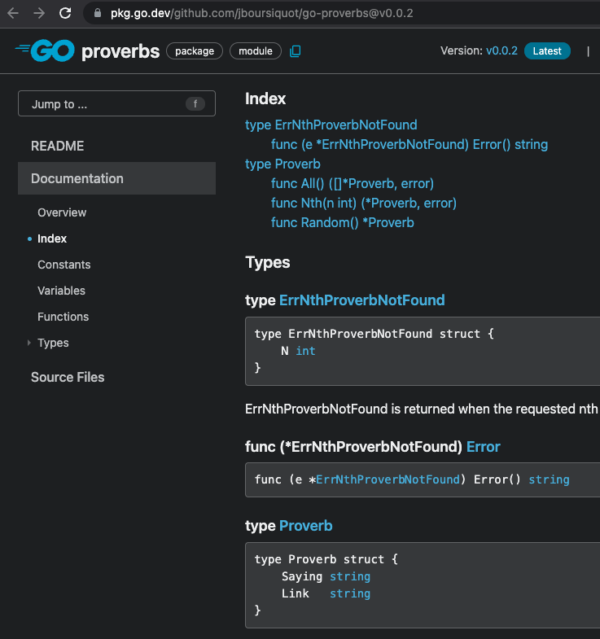
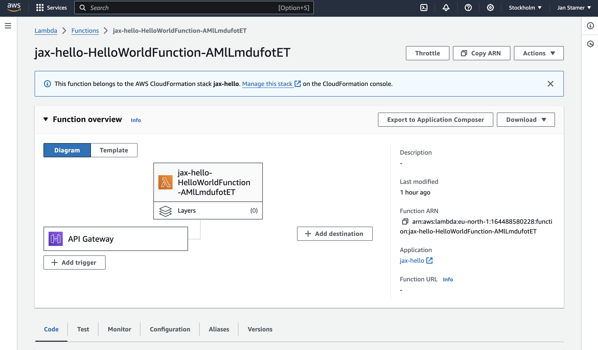

Go in der Praxis
gh Github CLI
149.298 Zeilen Code
490 Contributors
1.🖥️ CLI Tools
2.🌐 Web App
3.λ Lambda Function
5 Fakten zu Go
- statisches Typsystem
- Garbage Collection
- keine Vererbung
- Concurrency eingebaut
- native Ausführung
Linux, Win, z/OS, 386, amd64, ARM, wasm, ...

🖥️ CLI Tool
Go Proverbs
Go Proverbs
- 18 Prinzipien zur Go Entwicklung
- von Rob Pike 2015 vorgestellt
- "Clear is better than clever."
CLI Proverbs ohne Argumente
> pro
Clear is better than clever.
CLI Projekt aufsetzen
// 1. Go Modul erstellen (erzeugt go.mod)
> go mod init crossnative.com/pro
// 2. Datei main.go erstellen
package main
import "fmt"
func main() {
fmt.Println("Hello Go Pro!")
}
go build . // 1. Code kompilieren
./pro // 2. Binary ausführen
go run . // Code kompilieren und ausführen
Entwicklung
 Vim Go
Vim Go
Proverbs als Go Modul
Proverbs Modul nutzen
// 1. Proverbs Modul Dependency
> go get github.com/jboursiquot/go-proverbs
// 2. Go Modul Descriptor go.mod
module crossnative.com/pro
go 1.22
require github.com/jboursiquot/go-proverbs v0.0.2
Zufälliges Proverb ausgeben
package main
import (
"fmt"
"github.com/jboursiquot/go-proverbs"
)
func main() {
fmt.Println(proverbs.Random())
}
// Ausgabe `go run .`
&{Make the zero value useful. http://youtube.com/322}
💡 Structs und Pointer
package main
import (
"fmt"
"github.com/jboursiquot/go-proverbs"
)
func main() {
// Pointer Variable auf Proverb Struct
var p *proverbs.Proverb = proverbs.Random()
fmt.Println(p)
}
// Struct statt Klasse
type Proverb struct {
Saying string
Link string
}
Zufälliges Proverb ausgeben
package main
import (
"fmt"
"github.com/jboursiquot/go-proverbs"
)
func main() {
var p *proverbs.Proverb = proverbs.Random()
// Zugriff auf Property des Structs
fmt.Println(p.Saying)
}
// Ausgabe `go run .`
Make the zero value useful.
CLI Proverbs mit Count
> pro -count=3
Clear is better than clever.
Documentation is for users.
Don't panic.
Flag für Count
import (
"flag"
"fmt"
"github.com/jboursiquot/go-proverbs"
)
func main() {
// 1. Flags definieren
var count *int = flag.Int("count", 1, "proverb count")
// 2. Flags parsen
flag.Parse()
// 3. Ausgabe in Schleife
for i := 0; i < *count; i++ {
var p *proverbs.Proverb = proverbs.Random()
fmt.Println(p.Saying)
}
}
// Compile mit `go build .`, Ausgabe mit `pro -count=2`
Make the zero value useful.
Reflection is never clear.
CLI Proverbs mit ungültigem Count
> pro -count=
flag needs an argument: -count
Usage of ./pro:
-count int
proverb count (default 1)
Flag für Count Refactored
import (
"flag"
"fmt"
"github.com/jboursiquot/go-proverbs"
)
func main() {
// 1. Flags definieren
count := flag.Int("count", 1, "proverb count")
// 2. Flags parsen
flag.Parse()
// 3. Ausgabe in Schleife
for range *count {
p := proverbs.Random()
fmt.Println(p.Saying)
}
}
// Compile mit `go build .`, Ausgabe mit `pro -count=2`
Make the zero value useful.
Reflection is never clear.
🖥️ CLI Tool
File Downloader
File Downloader
- Paralleler File Download
- Nutzt Goroutinen und Channels
- Context is King
File Downloader 1/3
func main() {
urls := []string{
"https://go.dev/dl/go1.22.2.src.tar.gz",
"https://go.dev/dl/go1.22.2.darwin-amd64.tar.gz",
}
// URL Download
ctx := context.Background()
downloadURLs(ctx, urls)
}
func downloadURLs(ctx context.Context, urls []string) {
// ...
}
File Downloader 2/3
func downloadURLs(ctx context.Context, urls []string) {
// 1. Channel für Download Jobs
jobs := make(chan int, len(urls))
// 2. Go Routinen für Downloads starten
for _, url := range urls {
go func() {
downloadURL(ctx, url)
jobs <- 1 // Send an Channel (blockiert)
}()
}
// 3. Warten auf Ende aller Go Routinen
for range len(urls) {
<-jobs // Receive von Channel (blockiert)
}
}
File Downloader 3/3
func downloadURL(ctx context.Context, url string) {
// 1. HTTP Request mit Context erstellen
req, _ := http.NewRequestWithContext(ctx, http.MethodGet, url, nil)
// 2. HTTP Aufruf durchführen
httpClient := http.Client{}
resp, _ := httpClient.Do(req)
defer resp.Body.Close()
// 3. Ausgabe in Datei
file, _ := os.Create(filepath.Base(url))
defer file.Close()
// 4. HTTP Body in Datei streamen
io.Copy(file, resp.Body)
}
File Downloader 3/3 mit Fehlern
File Downloader mit Timeout
func main() {
urls := []string{
"https://go.dev/dl/go1.22.2.src.tar.gz",
"https://go.dev/dl/go1.22.2.darwin-amd64.tar.gz",
}
// 1. Context mit Cancel Func
ctx, cancel := context.WithCancel(context.Background())
// 2. Timer Channel nutzen
timer := time.After(3 * time.Second)
go func() {
<-timer // Receive timer Channel
log.Println("Canceled due to timeout")
cancel()
}()
// 3. URL Download
downloadURLs(ctx, urls)
}
File Downloader mit Interrupt
func main() {
urls := []string{
"https://go.dev/dl/go1.22.2.src.tar.gz",
"https://go.dev/dl/go1.22.2.darwin-amd64.tar.gz",
}
// 1. Context mit Cancel Func
ctx, cancel := context.WithCancel(context.Background())
// 2. Interrupt Channel nutzen
interrupt := make(chan os.Signal, 1)
signal.Notify(interrupt, os.Interrupt, syscall.SIGTERM)
go func() {
<-interrupt // Receive interrupt Channel
log.Println("Canceled due to interrupt")
cancel()
}()
// 3. URL Download
downloadURLs(ctx, urls)
}
File Downloader mit Select
func main() {
// 1. Context mit Cancel Func
// + Timeout Channel
// + Interrupt Channel
go func() {
select {
// 2a. Receive timer Channel
case <-timer:
log.Println("Canceled due to timeout")
cancel()
// 2b. Receive interrupt Channel
case <-interrupt:
log.Println("Canceled due to interrupt")
cancel()
}
}()
// 3. URL Download
downloadURLs(ctx, urls)
}
🖥️ CLI Tools
- Standardlib Flags
- einfache Releases mit Goreleaser
- Cobra CLI Lib wenn's komplexer wird
- Github, Kubernetes sind Go CLIs
🌐 Web App Cats
Set up Cats App
# 1. Verzeichnis erstellen
mkdir cats
cd cats
# 2. Go Modul aufsetzen
go mod init crossnative.com/cats
# 3. Go Datei erstellen
touch main.go
Cat API simple
func catAPIHandler(w http.ResponseWriter, r *http.Request) {
fmt.Fprintf(w, "Meow!")
w.WriteHeader(http.StatusOK)
}
func main() {
http.HandleFunc("GET /api/cats", catAPIHandler)
http.ListenAndServe(":8080", nil)
}
Cat API mit JSON
Cat API mit JSON
# Query cat API
curl -s http://localhost:8080/api/cats | jq
[
{
"name": "Ginger"
}
]
Test Cat API cat_api_test.go
Test ausführen
Cats App
Web
Cats Web App
File Server aus Binary
Index Handler Template mit Daten
Index Handler mit Cats API
Query Cats API
Map JSON auf Struct
Index Handler mit Cats API
func indexHandler(w http.ResponseWriter, r *http.Request) {
// 1. Cat API Aufruf (Fehler ignorieren)
resp, _ := http.Get("https://api.thecatapi.com/v1/breeds?limit=5")
// 2. Slice für Cat Structs
cat := make([]Cat, 5)
// 3. Response Body parsen
defer resp.Body.Close()
body, _ := ioutil.ReadAll(resp.Body)
json.Unmarshal(body, &cat)
// 4. Template rendern
tpl.Execute(w, cat)
}
Index Handler mit Fehlerhandling 💣
func indexHandler(w http.ResponseWriter, r *http.Request) {
// 1. Cat API Aufruf
resp, err := http.Get("https://api.thecatapi.com/v1/breeds?limit=5")
// Fehler behandeln
if err != nil {
http.Error(w, "Cats API error", http.StatusInternalServerError)
return
}
// 2. Slice für Cat Structs
cat := make([]Cat, 5)
// 3. Response Body parsen
defer resp.Body.Close()
body, _ := ioutil.ReadAll(resp.Body)
err := json.Unmarshal(body, &cat)
// TODO: Fehler behandeln
// 4. Template rendern
err := tpl.Execute(w, cat)
// TODO: Fehler behandeln
}
🌐 Web App
- Standardlib JSON und Router
- HTTP Tests
- Querschnittsfeatures durch Middleware
λ Lambda Function
λ Lambda Function
- Go ideal für Serverless Functions
- schneller Start, geringer Speicherbedarf
- unterstützt von AWS, Azure, Google
λ Lambda Function

λ Lambda Function
λ Lambda Function
λ Lambda Function
# Query AWS Lambda
curl -s https://0up9.eu-north-1.amazonaws.com/Prod/hello
Hello JAX!
Footprint
- Package Size 5,3 MB
- Billed Duration 70 ms
- Max Memory Used 18 MB
- Init Duration 63.66 ms
λ Lambda Function
λ Lambda Function Projekt
|-events
| event.json // Beispiel Request
|-hello-world // Go App
| go.mod
| go.sum
| main.go
| main_test.go
| Makefile // Build File
| samconfig.toml // SAM Config
| template.yaml // SAM Config
| README.md
🖥️ CLI Tools
- Projekt Setup
- Variablen, Schleifen
- Goroutinen, Channels
- Context
- Structs
🌐 Web App
- Web Server
- Slice
- Unit Test
- JSON
- Fehlerhandling
λ Lambda Func
- AWS Setup
- Serverless Experience
3 Gründe für Go
- Einfach
- Mächtig
- Langweilig
Go liebt
Microservices
Serverless Functions
Kommandozeilen-Tools
DevOps und Cloud